跌太狠了，真刺激~
识别文字连续阅读 · 原图附后
原始 PDF 不公开，本页展示捕获页面的截图。 识别文字按页序连续显示，全部原始截图附在文末，便于对照。文字由视觉转录整理，尚未经人工逐字核对，可能存在错字、漏字、漏行、顺序或断行错误。留言与作者回复仅限截图中可见的内容，不代表完整线上留言，也未据此推断留言总数。
OCR 识别提示（待核对）
- OCR/视觉转录文字，尚未逐字校对；可能错字、漏字、漏行，数字、姓名、表情、标点及断行也可能有误，请以截图为准。
- 这里只保留 PDF 已截到的正文、留言和作者回复；截图以外的留言不在此存档中。
- 未从截图推断留言总数或回复关系；手机界面文字也可能混入 OCR。
- 方括号中的表情说明是转录注释，原始表情请对照截图。
- 页面边界仅露出少量字形的重复行归到文字主体可见的相邻页；不推断缺失内容。
识别文字
文字按截图页序整理；页边重复行仅保留一次，原始 PDF 不公开。方括号中的表情说明为转录注释。
第 1 页对照原图
标普500涨1.3%，纳指涨1.6%，纳指100涨2.28%；
科技股方面，微软下跌2.26%，SpaceX跌2.33%，Meta跌1.97%，亚马逊跌1.74%；苹果、谷歌、特斯拉均上涨超2%；台积电涨4.25%，博通涨4%，AMD涨7.32%，甲骨文涨8.8%...
英伟达盘中涨2.87%，但盘后一度大跌超9%，主要是黄仁勋又出负面，被曝和女下属有染。
在美国的上市企业，CEO与下属的桃色关系会导致严重后果，除了有道德层面的问题，核心是权力不对等和利益冲突：
CEO掌握人事和薪酬权，下属很难拒绝；可能破坏公平
第 2 页对照原图
性，存在晋升、奖金、项目、调岗等利益输送；影响团队士气和员工信任，以及管理层的权威受质疑。
叠加黄仁勋前面和黄乐的亲密关系，市场会认为英伟达有公司治理和合规风险。
因此，可能会面临股东诉讼、信息披露审查和董事会追责等问题，市场也会重新评估公司稳定性。
毕竟投资时，除了看营收和利润等基本面以外，也看管理层是不是可信、制度是不是有效。
这次曝出黄仁勋有可能被迫离职，加上英伟达本身扁平化的管理架构所带来的继任风险和战略不确定性，股价波动就被进一步放大。
类似黄仁勋这类案件，美股上市公司中也不少：
2018年，英特尔前CEO科再奇和一员工存在亲密关系，即便关系自愿且已经结束，也改变不了违反公司政策的事实，最后辞职；
2019年，麦当劳前CEO伊斯特布鲁克与员工发生自愿关系被解雇，后来发现他隐瞒了相关事实，又追加了处
第 3 页对照原图
罚；
2010年，惠普前CEO赫德与女承包商的亲密关系引发调查，查出费用申报不准确和商业行为准则问题，最终引咎辞职；
比尔·盖茨的情况有些不同，他和微软女员工的早年婚外情曾经被董事会调查，不过当时他已经不是CEO。
上下级搞亲密关系这种事，在美国企业中是忌讳。本质上真正警惕的，是亲密关系导致权力有被滥用的嫌疑，容易产生利益冲突，进而隐瞒或虚假陈述，导致企业承担法律与治理责任。
因此，一旦触碰公司政策和公平管理，代价就会迅速变大。
至于什么黄皮肤是原罪、夺取企业之类的，属于宏大叙事里的噪音，不了解底层逻辑和本质。
英伟达这波下跌，从最高点下跌超30%，仅次于2025年4月那波下跌。
我在英伟达上做了负成本持仓，叠加这轮下跌的买入，目前持有成本还不到29美元，没有任何压力。
第 4 页对照原图
最近写得有点太详细了，又惹了点麻烦，被限流中；另外昨天又被掘坟盾了一篇23年的历史文章。
稳妥起见，后续详细的持仓和操作等一系列信息，就不再涉及，以免被直接抬走。
这轮科技股下跌，资金从科技股板块流出，转向消费和医药等板块，可口可乐、强生等都涨得不错，今年的涨幅均超30-40%；连伯克希尔这类今年抄底的都涨了25%+。
稳健型账户也涨得不错，即便英伟达下跌，但整体上账面收益率反而在往上涨。
目前现金储备约17%（时实数据），会根据市场走势看是否套现美债用于应对，暂时是不需要。
这轮下跌，我把进取型账户做了一些持仓调整，4大重仓个股+5只3-5%仓位的个股+4只1%及以下的个股，接下去会进一步微调，让持仓架构更合理。
稳健型账户也有变化，宽基指数占比超70%，医药保健龙头股等占比16.5%，消费龙头股占比约12.5%；
第 5 页对照原图
防守型账户，美债占比约49%，伯克希尔占比约28%，其余占比约23%...
每次下跌，都有一堆人问我怎么看，我现在越来越不想回答这类问题，每次都是一千多个问题，老读者问题少些，新读者问题偏多，看多了确实厌倦。
好的个股大跌，跌到预期了，我就觉得刺激；普通的个股再怎么窜稀暴跌，都跟我没关系，压根没关注。
看持仓主要是看背后的思路和底层逻辑，不是为了抄答案。别人的放到自己身上不一定适用，因为每个人的情况都不一样。
投资是一场马拉松，最终面对的都是自己。
马拉松拼的是自己的体能、节奏、战术安排；投资拼的是自己的认知、心态、投资纪律。
清楚自己的资金、成本、仓位、风险承受能力和预期等，以及自己的投资纪律和自控能力等。
想做好投资，第一步是先正确认识自己，这是投资中最
第 6 页对照原图
重要的一件事，然后耐心等待属于自己的机会。
一个连自己都不了解的人，很难在投资中活得好且长久。
... ...
孩子们最近适应得很好，也都在学校和社区交到了新的朋友，每天都挺愉快的。
老大是卷王，对自己的要求高，在过去这一年时间内，已经把高中的课业初步过了一遍。
据朋友反馈，老大在数学和物理上有天赋。朋友以前拿过奥数金牌，后来退下来专职做奥赛培训。
老大来加州前有跟他学过一段时间，他能这么说，说明老大还是有点天赋的，但和真正的天才相比，估计天赋也不多。
我当时高中也参加过这两科的奥赛，后来清楚认识到自己跟那些天才相比，压根不是那块料。
数学和物理这玩意，是世界上最不会骗人的东西，会就是会，不会就是不会，你想装会都装不起来，越急越做
第 7 页对照原图
不出来。
我的想法是老大把这两当爱好研究一二，学习学习就行。谷歌的朋友说，老大现在对AI兴趣很浓厚，对AI的理解和运用比我专业很多，和他相比，我就属于半点拉子水平。
有时我也在想，这小子以后会走什么样的路，找什么样的伴侣...想想也挺有意思的。
看着他，我时常会回想到自己中学时的场景和时光。虽然我也很直男，但高中时大冬天的，偶尔也会放学后跟女同学边吃冰淇淋边打着颤一路走回家。
跟我相比，老大就太直男了些，也不知道什么时候能开窍，哈哈哈。
就这样吧。
[页面导航]
历史文章 · 目录
上一篇 · 今年的麦子又熟了~
下一篇 · 此刻心定~
第 8 页对照原图
作者提示：个人观点，仅供参考
阅读 10万+ · 修改于2026年11月12日
留言 36
[留言 1]
老崔｜上海｜14小时前｜赞150
黄仁勋之于英伟达，类似乔布斯之于苹果的重要性。中短期看影响不大，长期难说
[作者回复留言 1]
金渐成（作者）｜14小时前｜赞498
或许，他对英伟达来说，有点不可替代的属性。
[留言 2]
袁建清｜北京｜14小时前｜赞104
创始人或者CEO管不住裤裆这点事，对一个快速发展的公司来说，极其影响客户和同事信任，真是挺要命的
[作者回复留言 2]
金渐成（作者）｜14小时前｜赞420
国内的就还好，多少是一个公司一个她，一个城市一个家的，也没见得这样大动干戈，但在美股，这就是大忌讳。
[留言 3]
放牧的羊｜广东｜14小时前｜赞89
210左右已经减仓，一直到后面做到了负成本，完全慌，这次跌的太多，我把微软的一部份减仓，转成英伟达
第 9 页对照原图
的，吃的挺香，手里还有3成左右仓位。有是感叹，达子好高了，跌点就好了，从2025年那波，到现在，也是见识到了美股二次大回撤，都是能让人绝望的回撤，对于负成本打法，就是捡钱。
[作者回复留言 3]
金渐成（作者）｜13小时前｜赞360
小资金就不太适合负成本持仓这套打法，更适合右侧交易捞便宜的价格，长期持有。
[留言 4]
NVDA守夜人｜北京｜14小时前｜赞95
总感觉这次危机反而会更督促英伟达完善他们的体系。在重大危机来临时过于依赖某个人是致命的，还是要有梯次分明的接班计划。
[作者回复留言 4]
金渐成（作者）｜14小时前｜赞303
能完善企业管理架构和接班人交接，也不是什么坏事，就怕失去创造性和开拓性。
[留言 5]
杨辉｜上海｜14小时前｜赞136
微软和meta今年收益都很好，高位变现调仓到英伟达和谷歌了，耐心等修复
[作者回复留言 5]
金渐成（作者）｜14小时前｜赞295
一年能操作一两次就满足了，不要频繁操作，容易踩坑或踏空。
[留言 6]
李博｜美国｜14小时前｜赞64
老黄六十多糟老头了还管不住自己的裤裆，白活了
第 10 页对照原图
[作者回复留言 6]
金渐成（作者）｜14小时前｜赞283
高精力群体，很多连续创业者或大企业公司的老板都是这类型。
[留言 7]
周｜浙江｜13小时前｜赞112
这么多科技股持续下跌的时候，宽基指数还在持续上涨，对普通人来说，宽基指数真是良药。
[作者回复留言 7]
金渐成（作者）｜13小时前｜赞266
过去几年一直在说，绝大多数普通人，持有俩个宽基指数就行了。但能听进去并这么做的，是少数。
[留言 8]
赵｜瑞典｜14小时前｜赞95
老大在某些方面是加强版的机哥呀，不过他将来如何找到机哥媳妇这么好的贤内助，我也挺想看的，毕竟钢铁直男被恋爱婚姻搞得焦头烂额的戏码挺有收视率的[三个咧嘴笑表情]
英伟达加油！！！[三个咧嘴笑表情]明年的收益目标就靠你啦～～～
[作者回复留言 8]
金渐成（作者）｜14小时前｜赞236
哈哈哈，升级版，我确实也很好奇，以后会出现什么样的女孩子，能跟他搭得来，在国内时社区有一邻居的女儿，倒是经常约他出去，结果他一点也没开窍，觉得出去很无聊，总拒绝人家[捂脸哭笑表情]
[留言 9]
Jaywill｜广东｜14小时前｜赞52
机哥，腾讯财源广进后大跌怎么看？[狗头表情]
第 11 页对照原图
[作者回复留言 9]
金渐成（作者）｜14小时前｜赞232
用眼睛看，还能怎么看...每天有上百个问我怎么看的，连问题都不会问[捂脸哭笑表情]
[留言 10]
PowerV｜北京｜14小时前｜赞141
总问、总等别人喂饭的人怕是熬不过断供之后的日子。玑哥以前分享过太多的精华，比如去年大跌的那些天，玑哥讲过斐波那契，那篇文章看完自己认真学一下怎么用，就能算出来这次达子下跌的关键支撑位究竟在哪里，理解了以后发现操作起来是很简单的数学题。玑哥能分享到这个份儿上真的是仁至义尽了。
[作者回复留言 10]
金渐成（作者）｜14小时前｜赞229
那些确实可以好好看看，投资心得那个集合看完，理解透，就懂怎么应对了。
[留言 11]
Sf｜广东｜14小时前｜赞81
这么多个股消息，确实现在有风险，难怪这段没收到信息。我们老读者不用说那么详细其实都能明白，新来的可以反复学习历史文章，我都将历史所有文章保存了自己细细研读
[作者回复留言 11]
金渐成（作者）｜14小时前｜赞217
后续就不再社涉及任何个股了，就只写公司层面的消息和基本面分析。
[留言 12]
Dexter Hou... [昵称截断]｜中国香港｜14小时前｜赞89
放慢节奏后，没想到等到了这么一个瓜。吃撑了。如此一来不妨再看看啊，换个人总是要磨合一段时间的。
第 12 页对照原图
[作者回复留言 12]
金渐成（作者）｜14小时前｜赞210
边吃瓜边等待，感觉也不错。
[留言 13]
程王众为｜浙江｜14小时前｜赞71
花钱的感觉真好
[作者回复留言 13]
金渐成（作者）｜13小时前｜赞193
也理解女人们买买买的那种爽感了，哈哈哈
[留言 14]
徽黄｜上海｜14小时前｜赞62
鼓励大公子先谈几段[咧嘴笑表情]
[作者回复留言 14]
金渐成（作者）｜14小时前｜赞183
我还真想他大学时能好好谈恋爱，哈哈哈，多经历，慢慢才懂怎么看人。
[留言 15]
静染墨香｜浙江｜13小时前｜赞65
看到最后，也想起我儿子了，我儿子大二，没有女朋友，我问他是不是学校里面没有漂亮女生，他说有，但是不喜欢。本来有点担心，但看他天天很忙的，也就不和他说这事了，反正还小
[作者回复留言 15]
金渐成（作者）｜13小时前｜赞181
现在的年轻人活得也挺明白的，不知是好是坏。有缘分的还真不需要去追，我就没追过女孩子，两情相悦的，自然而然会走到一块。
[留言 16]
和乐｜福建｜14小时前｜赞54
夜里起来喂奶，奶完娃就很难再入睡，
第 13 页对照原图
[作者回复留言 16]
金渐成（作者）｜14小时前｜赞177
确实是，我起来给娃换纸尿裤，然后就是睡不着了，码了这篇。本来发文了，想着睡醒了再打理留言，结果睡不着了，又上来回复评论。
[留言 17]
Eva｜上海｜14小时前｜赞151
“想做好投资，第一步是先正确认识自己，这是投资中最重要的一件事，然后耐心等待属于自己的机会。”投资最终是个人的选择，只有对自己极度了解与坦诚，才能决定要走的路径，选择与之匹配的标的组合。可惜很多人，第一步都不愿意真正花时间去了解与疏离。
[作者回复留言 17]
金渐成（作者）｜14小时前｜赞147
正解√
[留言 18]
Lina(跳跳)｜上海｜13小时前｜赞68
我儿一直感觉自己智商很低😂我说你别和天才比，今天的自己比昨天的自己有进步就很好。另外感觉现在好多孩子根本不需要异性，我问儿子难道没有青春期悸动，儿子说有是有的，但是不值得为此付出行动😓我家是学着理科的文社科生，他们同学老师，还有我也都很好奇，他以后会找什么样的女生。
[作者回复留言 18]
金渐成（作者）｜13小时前｜赞149
哈哈哈，到了15岁以后，变化越来越大，真不知道以后会找个啥样的伴侣。反正以后多谈恋爱，多经历，总没坏处[捂脸哭笑表情]
第 14 页对照原图
[底部界面]
搜索提示：黄仁勋女高管黄乐身份
金渐成（认证标记）
点赞 3628 · 分享 2493 · 喜欢 613 · 留言 36
原始图片 · 14 页
第 1 页 · 原始截图

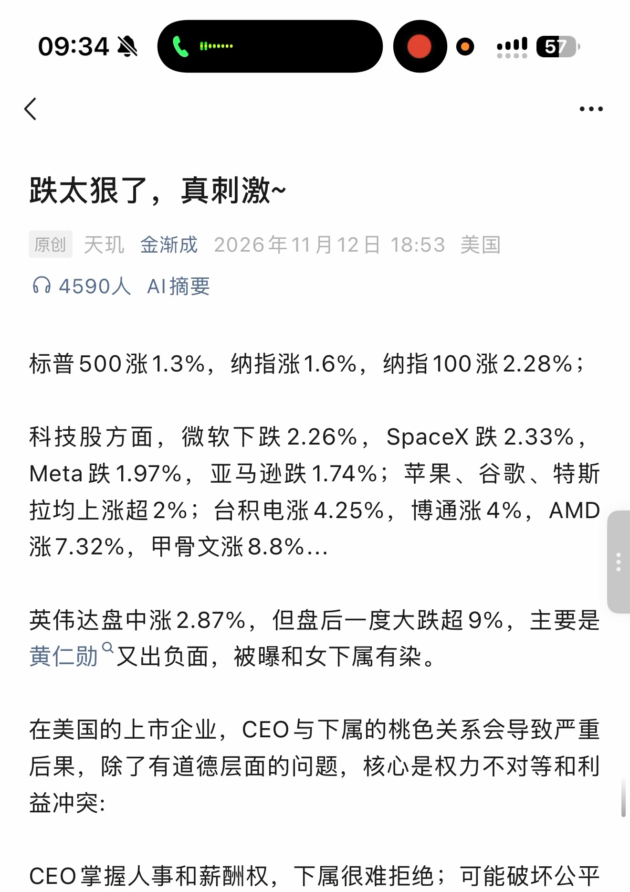
第 2 页 · 原始截图

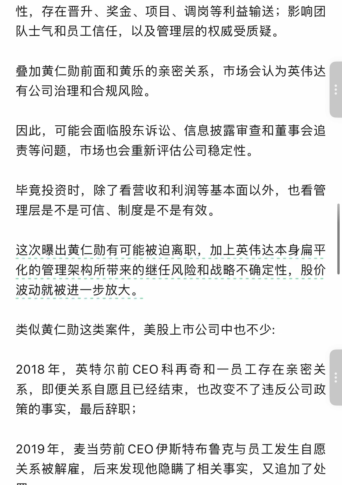
第 3 页 · 原始截图

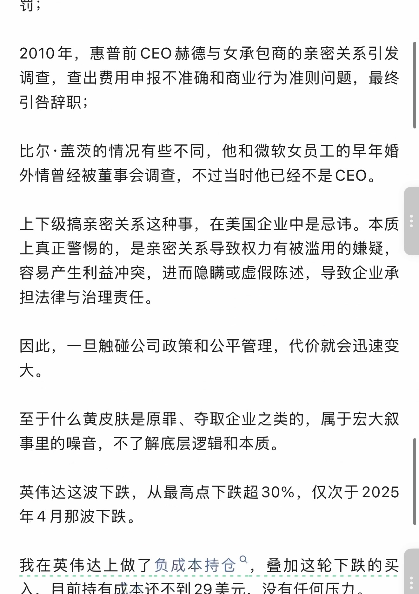
第 4 页 · 原始截图

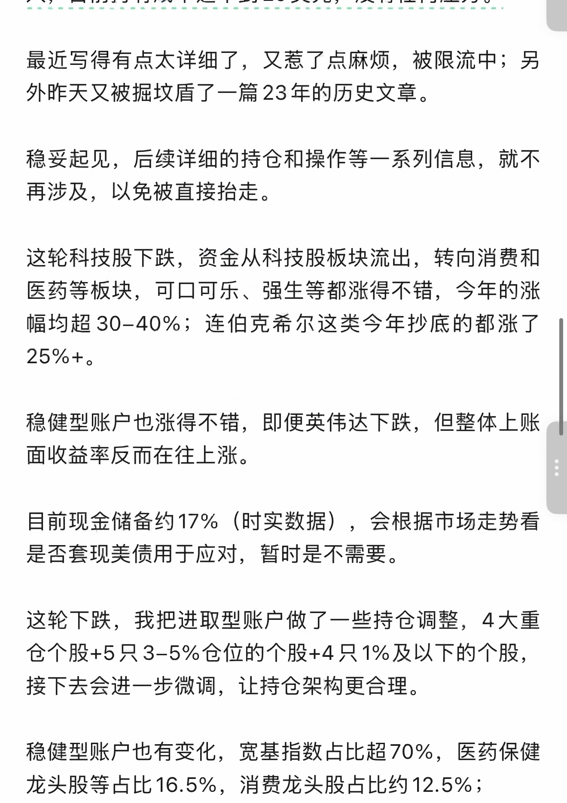
第 5 页 · 原始截图

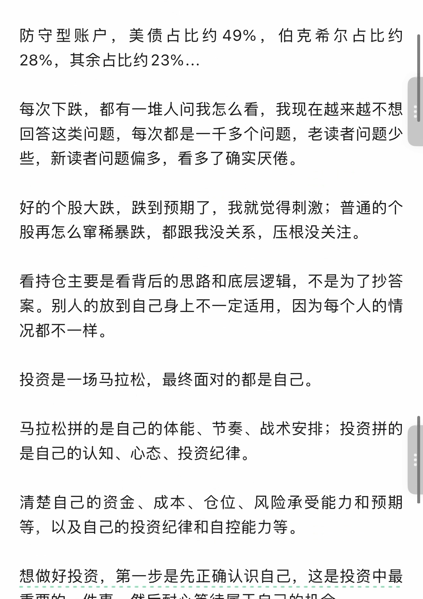
第 6 页 · 原始截图

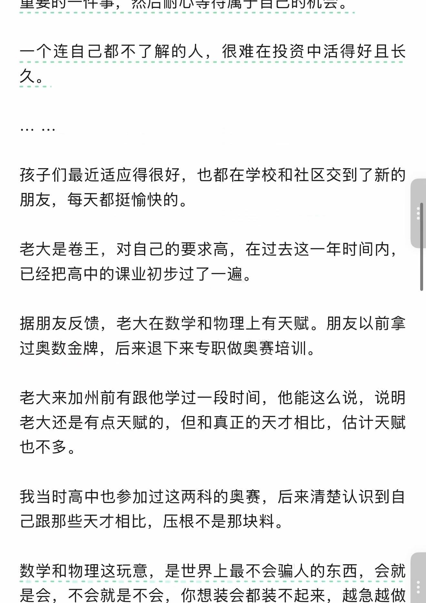
第 7 页 · 原始截图

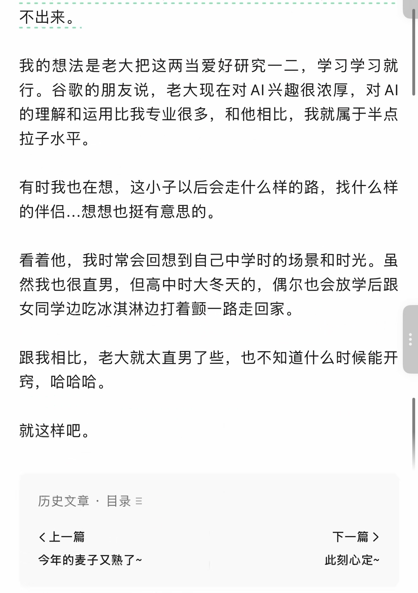
第 8 页 · 原始截图

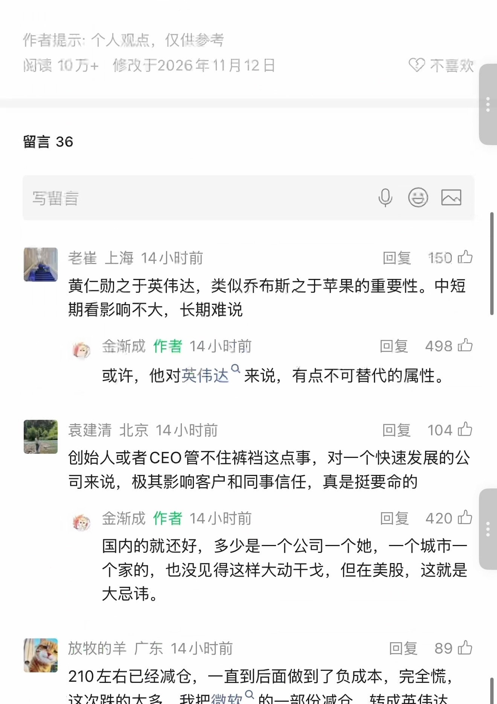
第 9 页 · 原始截图

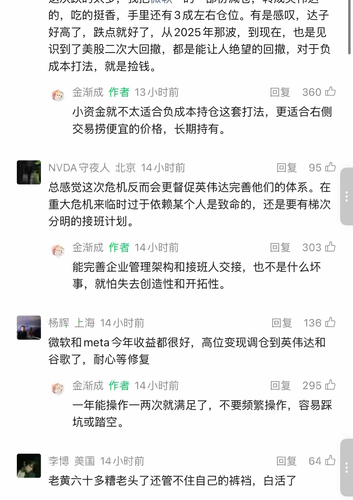
第 10 页 · 原始截图

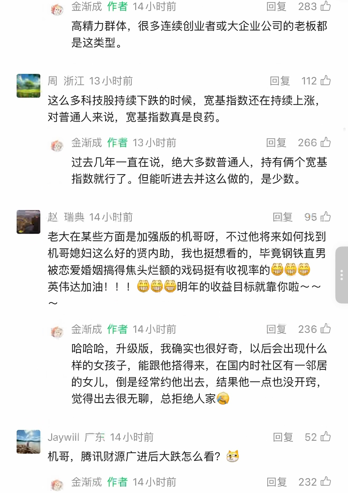
第 11 页 · 原始截图

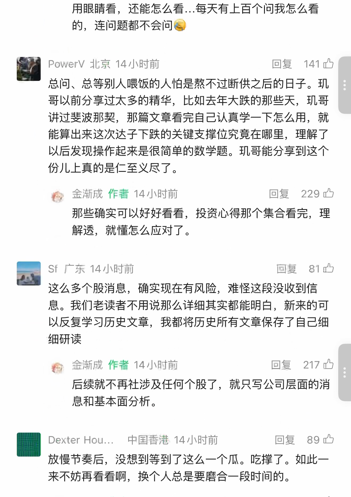
第 12 页 · 原始截图

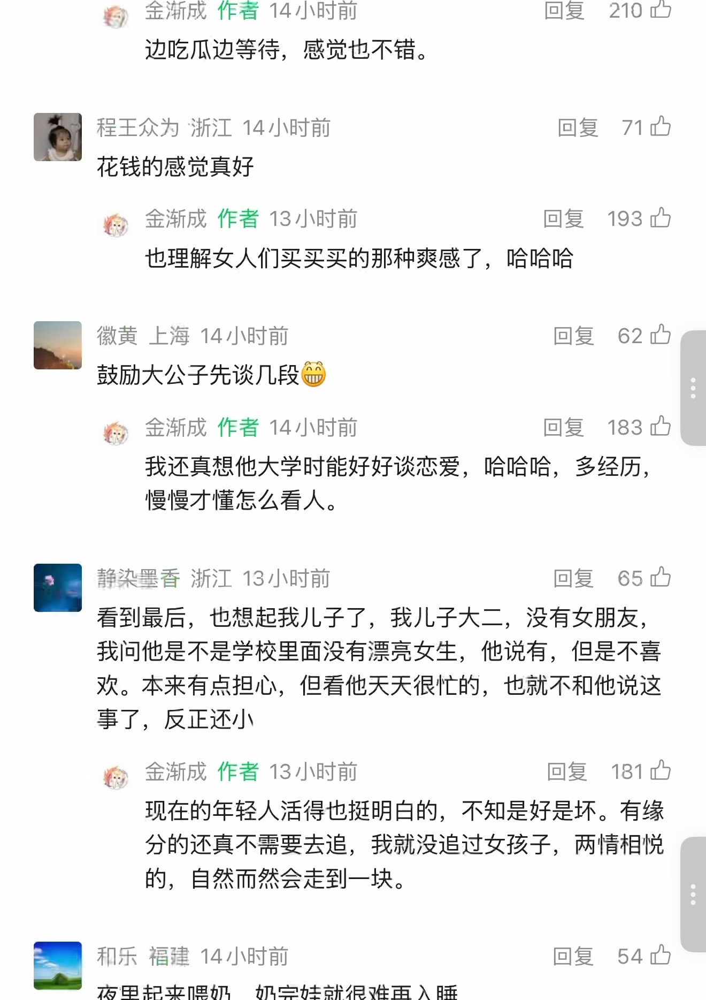
第 13 页 · 原始截图

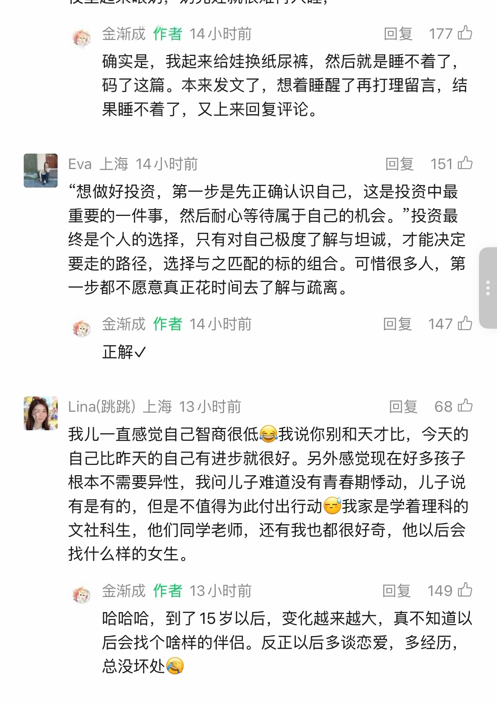
第 14 页 · 原始截图

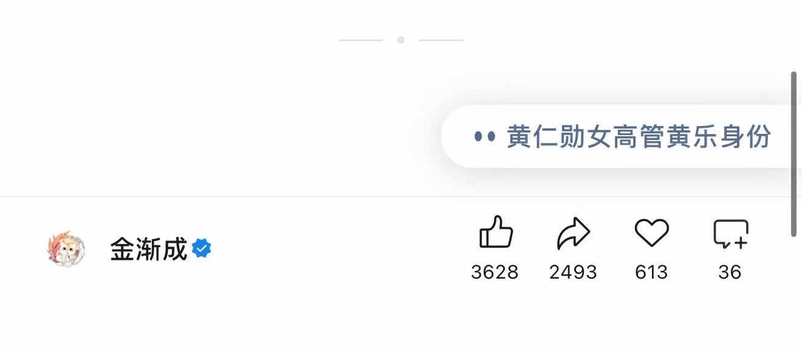
按日期浏览全部来源（同日按条目标识排序）
回到页首